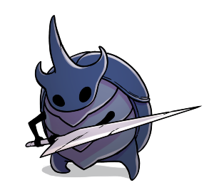

-
Falso Cavaleiro Encruzilhada Esquecida
Um verme enlouquecido por uma força estranha. Habita uma concha blindada roubada.
Criaturas fracas adoram roubar a força dos outros. Suas vidas são breves e amedrontadoras, e eles anseiam por ter o poder de dominar aqueles que os dominam.
-
Hornet Caminho Verde
Hábil protetora das ruínas de Hallownest. Empunha uma agulha e linha.
Eu vi esta pequena criatura ágil. Eu pensei que ela era uma presa e a ataquei, mas com um flash ela me esfaqueou com seu ferrão voador e saiu correndo. Ela poderia ser... uma Caçadora?
-
Lordes Louva-a-Deus Ermos Fungicos
Os líderes da tribo Louva-a-Deus, e seus melhores guerreiros. Possuem ferrões-lança, e atacam com a velocidade de um raio
A tribo Louva-a-Deus e os insetos de Hallownest não tinham amor uns pelos outros. No entanto, os Louva-a-Deus sobreviveram a seus rivais, e sua civilização perdura.
-
Defensor do Esterco Hidrovia Real
Hábil guerreiro que vive no coração da Hidrovia. Ataca intrusos com bolas de esterco compactado.
Lutar por 'honra', ou 'lealdade'... é o mesmo que lutar por cinzas. Se você quer matar, faça isso por você mesmo. Essa é a natureza de um verdadeiro caçador.
-
Mestre das Almas Santuario das Lagrimas
Líder do Santuário das Almas. Acumulou alma com esperança de evitar a aflição de Hallownest, mas acabou se intoxicando com seu poder.
Os insetos de Hallownest tentaram todos os tipos de truques, rituais e orações para se livrar da infecção. Mas sem sucesso! Talvez a infecção vem de algum lugar dentro deles que eles não puderam escapar.
-
Cavaleiro Sentinela  Santuario das Lagrimas
Couraça descartada de um Cavaleiro Sentinela, reanimado por um enxame de moscas infectadas
Quando estes guerreiros silenciosos caem em batalha, seus corpos se abrem e brotam estranhos insetos voadores> Eu me pergunto, o que virá de dentro de mim qunado eu morrer? Minhas esperanças e medos se perderão na escuridão?
-
Receptaculo Quebrado Bacia Antiga
Cadaver destroçado, reanimado por parasitas infectados
A forma dessa criatura... eu vi algo parecido antes. Talvez mais do que uma vez. Parece um pouco com os insetos de Hollownest, mas não muito. De onde vêm esses viajantes vazios?
-
Zote o Poderoso
 Dirthmouth
Dirthmouth
Um cavaleiro auto-proclamado, sem renome. Empunha um ferrão que ele esculpiu de uma casca de madeira, chamado 'Terminador de Vidas'.
Algumas criaturas são tão fracas e indefesas, tão tolas e irritantes que caçá-las não traz nenhum prazer.
-
Nightmare Grimm Dirthmouth
Espectro torcido de uma chama escarlate.
"A extenção dos sonhos foi dividida no passado. E um reino agora deve ficar separado. Vermelho pulsante, os escuros mais apagados. O Coração do Pesadelo. O sonho aterrorizado"
-
A Radiância Encruzilhada Esquecida
A luz, esquecida.
A praga, a infecção, a loucura que assombra os cadáveres de Hallownest... a luz que grita dos olhos deste Reino morto. Qual é a fonte? Suponho que meros mortais como eu nunca entenderão.